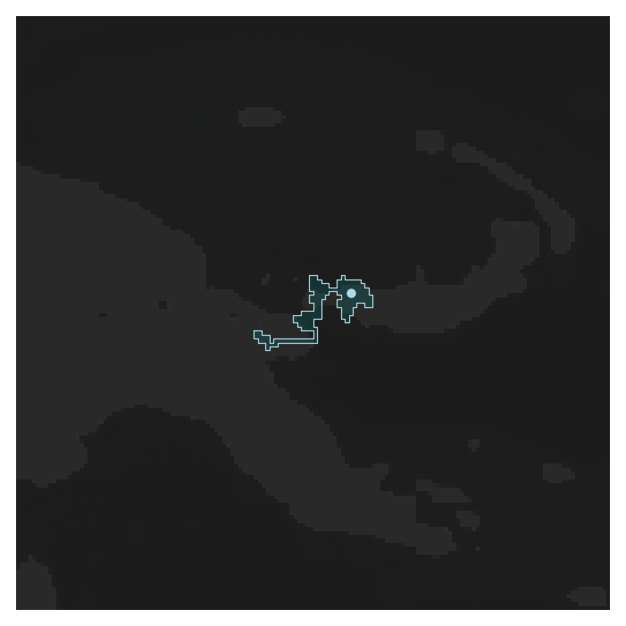
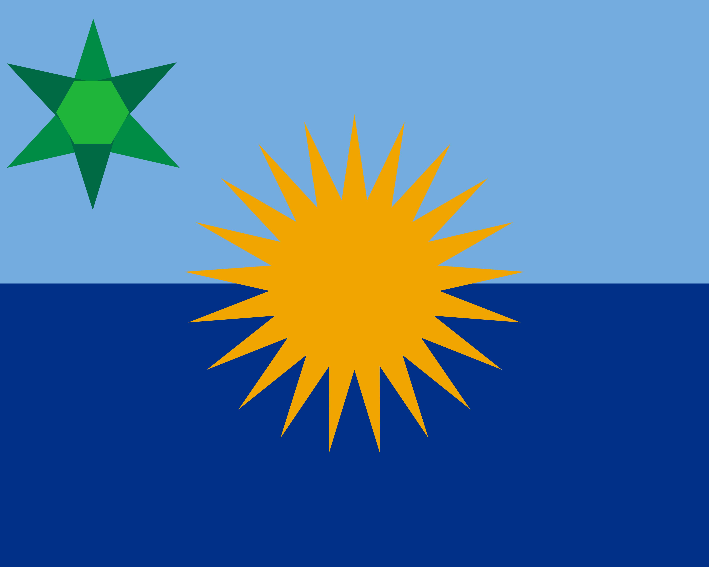

Town of Irgunlia - CTSEA
Irgunlia is a town on New Britain island, Bismarck Archipelago, Papua New Guinea. It technically has 5 residents, but really its just utirjd2 and his 4 offline friends (i would know since the person editing this is utirjd2)
Irgunlia was formed on October 6th, 2026 by utirjd2, who had just hopped on after a couple months of not being on. It joined the CTSEA the same day as it's founding.

Flag:

History of utirjd2
utirjd2 used to be the emperor of an empire in Central Asia known as the Zarqanian Empire, of which he inherited from .Azlan_2416. However, after not hopping on the server after more than 50 days, the empire and its town fell. After he hopped back on, he spawned and went to New Britain and founded a new town called Irgunlia.